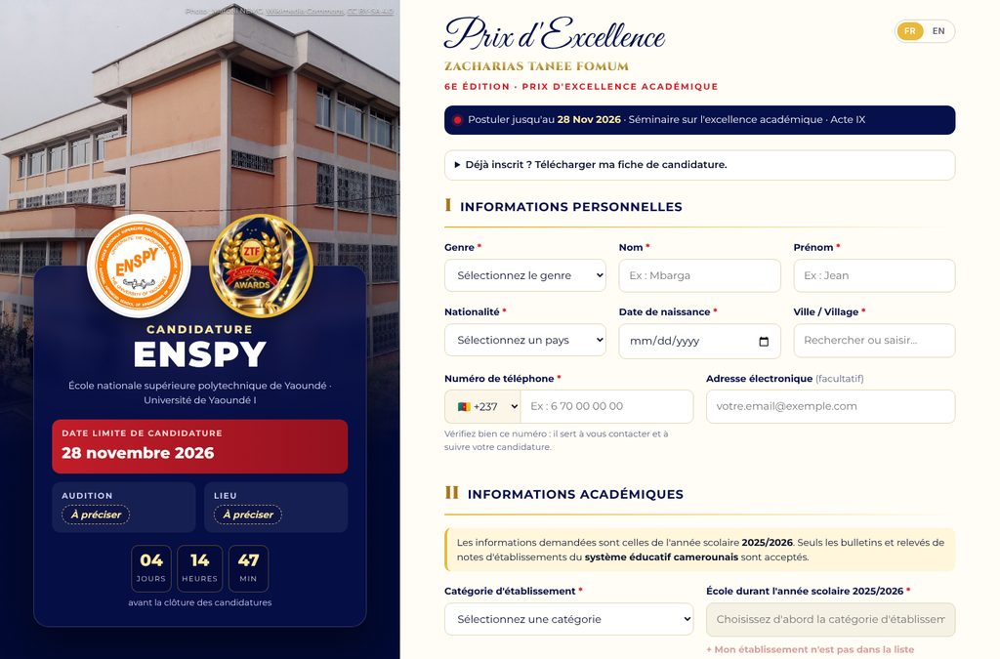
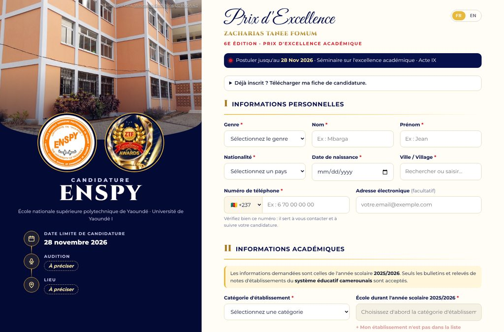
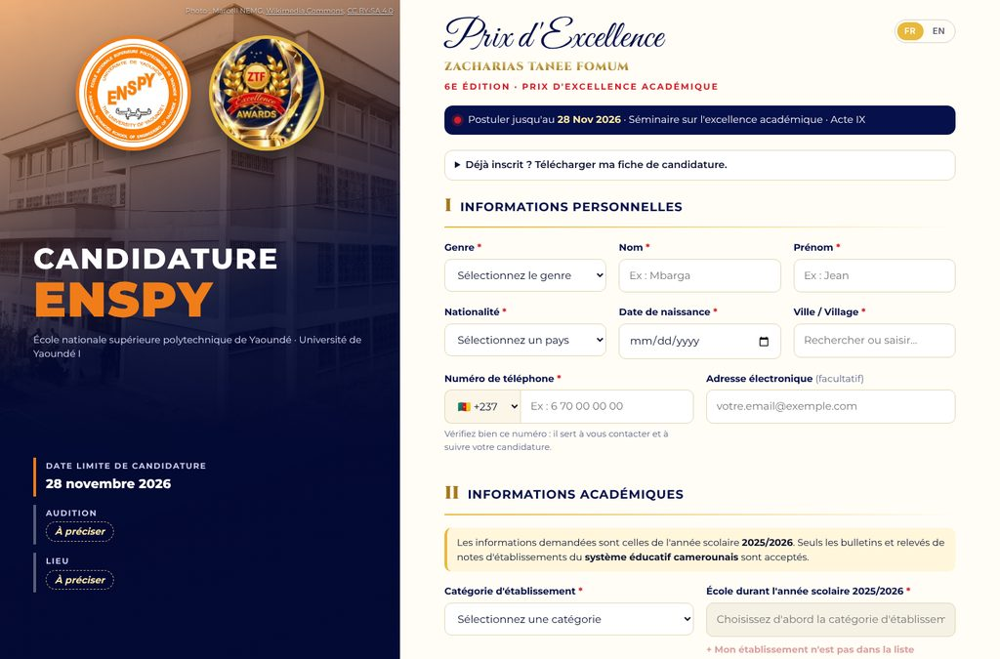
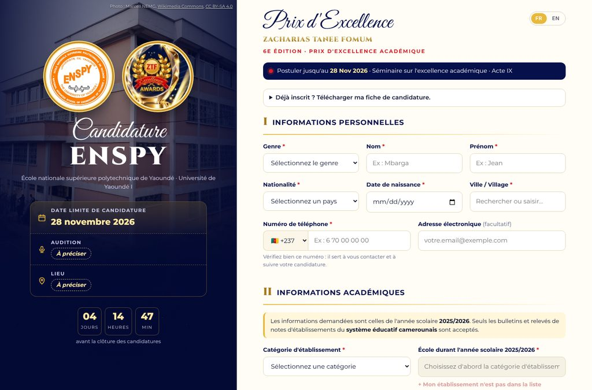

1. Croquis
Le croquis tel quel : les deux médaillons côte à côte, le titre, puis trois lignes « date limite / audition / lieu » sur la photo du bâtiment voilée de bleu nuit.
Aperçu téléphone →

2. Vitrine
La photo reste nette en haut ; une carte bleu nuit translucide porte les médaillons à cheval sur son bord, la date limite en rouge, l'audition et le lieu côte à côte, et le compte à rebours.
Aperçu téléphone →

3. Bandeau
La photo (bâtiment des travaux dirigés) en bandeau arrondi, les médaillons cerclés d'or posés sur sa courbe, puis les trois informations en frise avec pictogrammes.
Aperçu téléphone →

4. Couleurs de l'école
L'orange du logo de l'ENSPY sur la photo passée en noir et blanc : « ENSPY » en grand, en orange, texte aligné à gauche. Chaque école aurait sa couleur.
Aperçu téléphone →

5. Gala
Dans l'esprit des affiches de la 6e édition : paillettes, médaillons à double anneau doré, « Candidature » en script, informations dans un encadré doré, compte à rebours.
Aperçu téléphone →
À savoir

- Audition et lieu ne sont pas encore connus : la page affiche « À préciser » (« To be announced » en anglais) jusqu'à ce que la Fondation les communique.
- Logo du prix : provisoire, c'est le trophée « ZTF Excellence Awards » découpé dans le flyer.
- Photos : Wikimedia Commons, licence CC BY-SA 4.0 ; l'auteur est cité sur la page, en haut à droite. Logo ENSPY : fichier de Commons repris de polytechnique.cm ; mieux vaut obtenir l'accord de l'école avant la mise en ligne. Détail dans img/SOURCES.md.
- Sur téléphone, la colonne passe au-dessus du formulaire, comme sur le site actuel.
- FR / EN : le bouton en haut du formulaire traduit aussi la colonne de gauche. En bas à gauche, « Maquette · pré-remplir » remplit un dossier fictif ; l'envoi est simulé.